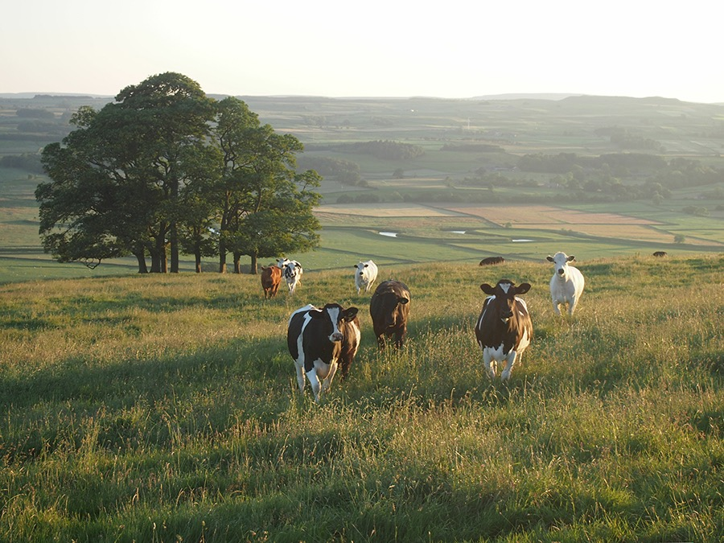

About New zealand Cows
A group of New Zealand cows standing in a field, farmfields rolling into the distance behind them.
New Zealand farms just under 5 million dairy cows in over 11,000 dairy herds. These bring in about $19
billion a year to the national economy.
- High fertility:
Genetic fertility trends are positive, as are phenotypic trends. In 2019, the NZ national 6 week
in-calf rate reached yet another high point after 4 years of consecutive gains. Final in-calf rate
is also improving despite the average herd’s total mating length being shortened (2019 saw the
shortest recorded to date at just 10.7 weeks). Another interesting trend is the move to better
information gathering. 55% of herds recording on LIC’s MINDA® software now generate detailed
Fertility Focus® reports, compared to just 13% ten years ago.
- Longevity:
Herd life of cows in New Zealand is one of the longest in the world, averaging over 4.5 lactations
per cow and unlike most countries, the phenotypic trend is for increased herd life.
- Production efficiency:
Production per kg/ liveweight continues to climb; modern New Zealand cows produce 50 kg milk solids
more per year than the cows of a decade ago, despite being about the same size. High genetic merit
cows are more profitable for farmers.
- Environment and welfare:
High genetic merit animals partition more of the feed eaten into milk solids, and less into waste.
This means more nitrogen is being converted into protein in cow’s milk rather than being excreted as
urine or faeces. LIC has launched a HoofprintTM Index helping farmers to identify the most
environmentally efficient cows. LIC International has taken the HoofprintTM Index to its overseas
farmers also.